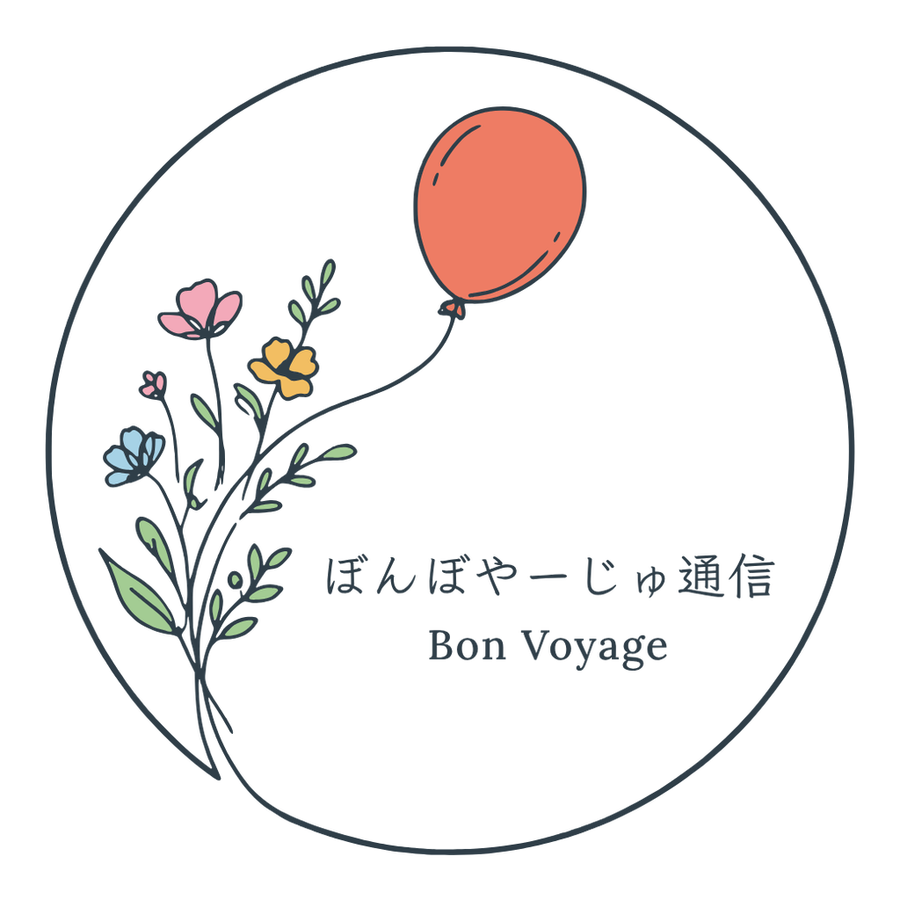

<!doctype html>
<html lang="ja">
<head>
<meta charset="utf-8">
<meta name="robots" content="noindex">
<title>郵送のお手紙（協賛のご案内・チラシのお願い）</title>
<!--
  2026-11-16 オーナー「メールと郵送だけで営業しまくる。郵送料はなるべく安く」。
  A4 1枚（片面）を三つ折りにして長3封筒へ。チラシと一緒に入れて 50g 以内＝定形 110円。
  中身は scripts/make-kyosan-mail.mjs が window.render(データ) で差し込む（送り先の一覧は data/kyosan-mail/*.json）。
  type: shokai（紹介型）／ouen（応援型）／chirashi（チラシを置いていただくお願い。お金の話は一切書かない）
  🔒 住所・振込先・電話はここに書かない。返事はメールだけで受ける（お電話はしない）。
  数字は「いま言える数字」（docs/sponsor-script.md）と読者アンケートの最終集計（docs/reader-growth.md）から。盛らない。
-->
<style>
* { box-sizing: border-box; }
body { margin: 0; font-family: "Noto Sans JP", sans-serif; color: #2b2b2b; background: #fff; }
.page { width: 210mm; height: 297mm; padding: 11mm 15mm 8mm; position: relative; overflow: hidden; }
.date { position: absolute; top: 11mm; right: 15mm; font-size: 9.5pt; color: #555; }
.to { font-size: 12pt; margin: 0 0 1mm; max-width: 150mm; line-height: 1.35; }
.to b { font-size: 14pt; }
.to small { display: block; font-size: 9.5pt; color: #444; }
.to .h { white-space: nowrap; margin-left: 2mm; }
h1 { font-family: "Zen Maru Gothic", sans-serif; font-size: 16.5pt; margin: 3.5mm 0 2mm; letter-spacing: .02em; color: #2f5e4e; }
.lead { font-size: 9.3pt; line-height: 1.62; margin: 0 0 2.8mm; }
.lead p { margin: 0 0 .6mm; }
.box { border: 1.2pt solid #2f5e4e; border-radius: 3mm; padding: 2.6mm 4.2mm; margin-bottom: 2.6mm; }
.box h2 { font-family: "Zen Maru Gothic", sans-serif; font-size: 11.5pt; margin: 0 0 1.6mm; color: #2f5e4e; }
.why li { font-size: 9pt; line-height: 1.55; margin-bottom: .5mm; }
ul { margin: 0; padding-left: 5mm; }
.nums { display: grid; grid-template-columns: repeat(4, 1fr); gap: 2.5mm; margin: 0 0 2.6mm; }
.n { background: #f3f6f2; border-radius: 2.5mm; padding: 2mm 1.5mm; text-align: center; }
.n .v { font-family: "Zen Maru Gothic", sans-serif; font-size: 15pt; color: #2f5e4e; line-height: 1.2; }
.n .v small { font-size: 9pt; }
.n .l { font-size: 7.8pt; line-height: 1.4; color: #444; margin-top: .6mm; }
table { width: 100%; border-collapse: collapse; font-size: 8.9pt; }
td, th { border-bottom: .6pt solid #cfd8cf; padding: .9mm 1.4mm; text-align: left; vertical-align: top; line-height: 1.6; }
th { width: 26mm; color: #2f5e4e; font-weight: 700; white-space: nowrap; }
.price { font-size: 12.5pt; font-weight: 700; }
.note { font-size: 8pt; color: #555; line-height: 1.55; margin: 1.4mm 0 0; }
.next { background: #f7f4ec; border-radius: 3mm; padding: 2.4mm 4.2mm; margin-bottom: 2.6mm; font-size: 9.1pt; line-height: 1.6; }
.next b { color: #2f5e4e; }
.foot { display: flex; gap: 4mm; justify-content: space-between; align-items: flex-end; font-size: 8.6pt; line-height: 1.5; border-top: .6pt solid #cfd8cf; padding-top: 2.4mm; }
.foot b { font-size: 10.5pt; }
.sign { font-size: 10pt; margin-top: 1mm; }
.qrs { display: flex; gap: 3mm; }
.qr { text-align: center; font-size: 7.5pt; color: #555; }
.qr img { width: 20mm; height: 20mm; display: block; margin: 0 auto 1mm; }
.enc { font-size: 8.3pt; color: #555; margin-top: 1mm; }
/* 🆕 2026-11-16 オーナー「協賛の手紙はB5に」。協賛（shokai・ouen）だけ B5（182×257mm）。三つ折りで長4封筒（90×205mm）にも入る。
   チラシのお願い（chirashi）は A4 のまま。文字は8pt台を下回らないように詰める */
.page.b5 { width: 182mm; height: 257mm; padding: 9mm 11mm 6.5mm; }
.b5 .date { top: 9mm; right: 11mm; font-size: 8.5pt; }
.b5 .to { font-size: 10.5pt; max-width: 130mm; }
.b5 .to b { font-size: 12.5pt; }
.b5 .to small { font-size: 8.5pt; }
.b5 h1 { font-size: 14pt; margin: 2.4mm 0 1.6mm; }
.b5 .lead { font-size: 8.5pt; line-height: 1.55; margin-bottom: 2mm; }
.b5 .lead p { margin-bottom: .3mm; }
.b5 .nums { gap: 2mm; margin-bottom: 2mm; }
.b5 .n { padding: 1.4mm 1mm; }
.b5 .n .v { font-size: 12.5pt; }
.b5 .n .v small { font-size: 8pt; }
.b5 .n .l { font-size: 7.1pt; line-height: 1.35; }
.b5 .box { padding: 2mm 3.4mm; margin-bottom: 2mm; }
.b5 .box h2 { font-size: 10pt; margin-bottom: 1.2mm; }
.b5 .why li { font-size: 8.3pt; line-height: 1.48; margin-bottom: .3mm; }
.b5 ul { padding-left: 4.2mm; }
.b5 table { font-size: 8.2pt; }
.b5 td, .b5 th { padding: .6mm 1.1mm; line-height: 1.48; }
.b5 th { width: 18mm; }
.b5 .note { font-size: 7.3pt; line-height: 1.45; margin-top: 1mm; }
.b5 .next { font-size: 8.3pt; line-height: 1.5; padding: 1.9mm 3.4mm; margin-bottom: 2mm; }
.b5 .foot { font-size: 7.8pt; line-height: 1.45; padding-top: 1.8mm; gap: 3mm; }
.b5 .foot b { font-size: 9.3pt; }
.b5 .sign { font-size: 9pt; margin-top: .6mm; }
.b5 .qrs { gap: 2mm; }
.b5 .qr { font-size: 6.8pt; }
.b5 .qr img { width: 21mm; height: 21mm; }
/* 掲載イメージのQR（SVG）は白い余白が広い（37マス中4マス×2）。LINEのQR（PNG・余白は1割弱）と黒い部分の大きさをそろえる
   ＝ 21mm × (250/290) ÷ (29/37) ≒ 23.1mm に広げ、増えた分の白い余白を外側にはみ出させる（2026-11-16 オーナー「LINEのQRのほうが若干大きい」） */
.b5 .qr img.k { width: 23.1mm; height: 23.1mm; margin: -1.05mm -1.05mm -.05mm; }
.b5 .enc { font-size: 7.4pt; margin-top: .6mm; }
/* 🆕 2026-11-16 オーナー「協賛の手紙の左下に、ロゴマーク」。丸いロゴ（docs/print/logo/logo-color-clear.png） */
.fl { display: flex; align-items: flex-end; gap: 3mm; }
/* 🆕 2026-11-16 営業の見直し（見出しは相手の得・数字は3つ） */
.nums.n3 { grid-template-columns: repeat(3, 1fr); }
.kicker { font-size: 9.5pt; color: #2f5e4e; font-weight: 700; margin: -.6mm 0 2mm; }
.b5 .kicker { font-size: 8.8pt; margin: -.4mm 0 1.6mm; }
.b5 h1 { line-height: 1.3; }
/* 🆕 2026-11-16 オーナー「下に余白があるので宛先をもう少し下に」「見出しの前後に余白を設けて、見出しが目に入るように」 */
.b5 .to { margin-top: 7mm; }
.b5 h1 { font-size: 15pt; margin: 8mm 0 5.5mm; }
/* 数字は3つにしたぶん大きく（上から読んで目に入るように） */
.b5 .nums.n3 .n { padding: 1.8mm 1mm 1.6mm; }
.b5 .nums.n3 .n .v { font-size: 17pt; font-weight: 700; }
.b5 .nums.n3 .n .v small { font-size: 9pt; }
.b5 .nums.n3 .n .l { font-size: 7.4pt; }
.nums.n4 { grid-template-columns: repeat(4, 1fr); }
.b5 .nums.n4 .n { padding: 1.8mm .8mm 1.6mm; }
.b5 .nums.n4 .n .v { font-size: 16pt; font-weight: 700; }
.b5 .nums.n4 .n .v small { font-size: 8.5pt; }
.b5 .nums.n4 .n .l { font-size: 6.9pt; }
/* チラシのお願いは中身が短いので、字を大きく（待合室・お店の方が読みやすく） */
.b5.roomy h1 { font-size: 14.5pt; margin: 10mm 0 7mm; }
.b5.roomy .to { margin-top: 10mm; }
.b5.roomy .lead { font-size: 9.4pt; line-height: 1.65; }
.b5.roomy .why li { font-size: 9.3pt; line-height: 1.6; margin-bottom: .6mm; }
.b5.roomy .box h2 { font-size: 11pt; }
.b5.roomy .note { font-size: 8.1pt; }
.b5.roomy .next { font-size: 9.2pt; line-height: 1.6; }
.b5.roomy .foot { font-size: 8.4pt; }
.logo { width: 27mm; height: 27mm; flex: none; }
</style>
<style id="pagesize">@page { size: A4; margin: 0; }</style>
</head>
<body>
<div id="root"></div>
<script>
const esc = (s) => String(s ?? '').replace(/[&<>"]/g, (c) => ({ '&': '&amp;', '<': '&lt;', '>': '&gt;', '"': '&quot;' }[c]));
// **太字** だけ使える（ほかのタグは書けない）
const md = (s) => esc(s).replace(/\*\*(.+?)\*\*/g, '<b>$1</b>');
const jdate = (d) => { if (!d) return ''; const [y, m, dd] = d.split('-').map(Number); return `${y}年${m}月${dd}日`; };

// いま言える数字（2026-11-16）。変えるときは docs/kyosan-mail.md の「数字」も。
// 🆕 2026-11-16 オーナー「強い数字だけで勝負したい」「17人だとアンケート少ねえとならないか」→ アンケートの数字は大きく出さない
//   出どころ: LINE公式アカウントの分析（11/16 オーナーのスクショ）・Notion のチラシのアポリスト（置けた・郵送で継続のうち、届けたもの）
const N = {
  reach: ['233', '人', '毎週水曜にLINEで<br>届いている人数（11月16日）'],
  grow:  ['3.5', '倍', '9月はじめの66人から<br>2か月半で'],
  open:  ['62.5', '%', 'LINEが届いた人のうち<br>開いた人（10月28日号）'],
  click: ['32', '%', '開いた人のうち、ページを<br>見に行った人（10月28日号）'],
  kan:   ['40', 'か所以上', 'チラシ設置：地域センター・<br>児童館・幼稚園・科学館など'],
};
const NUMS = { ouen: ['reach', 'grow', 'open', 'kan'], shokai: ['reach', 'open', 'click', 'grow'], chirashi: ['kan', 'reach', 'grow'] };

// 見出しは「相手の得」から（送り手の「ご案内」から始めない）。送り先ごとに headline で差し替えられる
const HEAD = {
  ouen: '小平の子育て家庭に毎週届く通信のページに、\nお店のお名前を載せませんか',
  shokai: '体験会の日を、\nその年齢のお子さんがいるご家庭に届けませんか',
};
const headOf = (t, d) => d.headline || (t === 'chirashi' ? `${d.place || '待合室の一角'}に、\n小平の子育て家庭向けの無料チラシを置かせていただけませんか` : HEAD[t]);
// 見出しの下の1行は置かない（2026-11-16 オーナー「サブタイトルに1業種1件とか書かなくていい」）。見出しだけを余白で目立たせる。要るときだけ送り先ごとに kicker
// 自己紹介は、相手への一文のあとに
const WHO = '私たちは花小金井に住む親で、小平の赤ちゃん・未就学児・小学生のいるご家庭に、週末のおでかけ情報を毎週水曜の朝、LINEで無料でお届けしています（ぼんぼやーじゅ通信）。公園・児童館・図書館の催しを、市や施設の公式ページで一件ずつ確かめて載せています。';
const OPEN = {
  ouen: '子育て家庭に向けてお仕事をされている、地元のお店にお便りしています。',
  shokai: '子ども向けの教室や体験の催しをされている、地元の教室にお便りしています。',
  chirashi: '小さなお子さんのいるご家庭が来られる場所に、無料の通信のチラシを置かせていただけるところを探しています。',
};
const AFTER = {
  ouen: '',
  shokai: '',
  chirashi: '',
};

function terms(t, d) {
  if (t === 'shokai') return `
  <div class="box">
    <h2>載せ方と掲載料</h2>
    <table>
      <tr><th>載る場所</th><td>毎週の通信の<b>年齢別ページ</b>（赤ちゃん・未就学・小学生のうち、催しの対象に合うページ）と、おでかけカレンダー・マップ（催しの日まで）</td></tr>
      <tr><th>載るもの</th><td>催しの名前・日時・場所・料金と、紹介文（150字くらい。お店で書いていただいても、おまかせでも）。写真は2枚まで</td></tr>
      <tr><th>掲載料</th><td>ご紹介する号ごとに 3,000円。載せる前に仕上がりをお見せし、ご確認いただいてからのお振込みです（請求書：ニコマル）</td></tr>
            <tr><th>表示</th><td>お金をいただいた掲載には、法律にしたがって「PR」と表示します</td></tr>
    </table>
    <p class="note">LINEのメッセージそのものには載りません（LINEのきまりで、お金をいただいた宣伝は流せないため）。LINEは毎週ページを開く入口です。${d.alsoOuen ? '日付のある催しがないときは、1年間お名前を載せる「応援型」（年1万円）もございます。' : ''}</p>
  </div>`;
  return `
  <div class="box">
    <h2>載せ方と掲載料</h2>
    <table>
      <tr><th>載る場所</th><td>毎週の通信の年齢別ページ（赤ちゃん・未就学・小学生の3つ）のいちばん下と、チラシの協賛欄</td></tr>
      <tr><th>載るもの</th><td>お店のお名前（ロゴも可）と、ひとこと（20字まで）${d.noItem ? `。<b>${esc(d.noItem)}</b>` : ''}</td></tr>
      <tr><th>掲載料</th><td>1年間で 10,000円（お申し込みのときの料金で1年間）。請求書（発行：ニコマル）をお送りし、お振込みいただきます</td></tr>
      <tr><th>枠</th><td>同じ業種のお店は、ほかに載せません（協賛は全体で7社まで）</td></tr>
      <tr><th>表示</th><td>お金をいただいた掲載には、法律にしたがって「PR」と表示します</td></tr>
    </table>
    <p class="note">LINEのメッセージそのものには載りません（LINEのきまりで、お金をいただいた宣伝は流せないため）。LINEは毎週ページを開く入口で、LINEを開いた人の3人に1人が、ページのリンクを押しています（10月28日号）。</p>
  </div>`;
}

function ask(d) {
  // チラシのお願い: 相手の負担がないことを先に。お金・協賛・広告の話は一切書かない
  return `
  <div class="box">
    <h2>お願いしたいこと</h2>
    <ul class="why">
      ${(d.asks || [`お届けしたチラシ（${d.copies || 5}部）を、${d.place || '待合室や受付の一角'}に置いていただけないでしょうか。`]).map((a) => `<li>${md(a)}</li>`).join('')}
      <li>なくなったら、メールかLINEでひとことお知らせください。<b>こちらから郵送で補充します</b>（送料はこちらで持ちます）。</li>
      <li>置けない場合は、チラシは破棄していただいて大丈夫です。お返事は要りません。</li>
    </ul>
    <p class="note">通信もチラシも無料です。チラシのQRコードからLINEで友だち追加すると、毎週水曜の朝に届きます（お名前などの入力は要りません）。</p>
  </div>`;
}

function next(t) {
  if (t === 'chirashi') return `
  <div class="next"><b>置いていただけた場合は、メールかLINEで「置きました」とだけお知らせください。</b>置けない場合は、お返事は要りません。<br>
  LINEは右下のQRコードから友だち追加して、トークにどうぞ。</div>`;
  if (t === 'shokai') return `
  <div class="next"><b>体験会の予定が決まったら、日にちだけ、メールかLINEでお知らせください。</b>紹介文の案を作ってお見せします。載せるかどうかは、仕上がりを見てからお決めください。
  ご都合のよい日時に、<b>詳しくご説明に伺う</b>こともできます。<br>
  LINEは右下の「LINEでお返事」のQRコードから友だち追加して、トークにどうぞ。掲載イメージは、その隣のQRコードのページでご覧いただけます。</div>`;
  return `
  <div class="next"><b>ご関心をお持ちでしたら、メールかLINEで「話を聞きたい」とだけお送りください。</b>ご都合のよい日時をうかがって、<b>詳しくご説明に伺います</b>（メールやLINEでのご説明もできます）。<br>
  LINEは右下の「LINEでお返事」のQRコードから友だち追加して、トークにどうぞ。掲載イメージは、その隣のQRコードのページでご覧いただけます。</div>`;
}

window.render = (d) => {
  const t = d.type || 'ouen';
  const reasons = (d.reasons || []).map((r) => `<li>${md(r)}</li>`).join('');
  const head = headOf(t, d);
  const kick = d.kicker || '';
  document.title = `${head.replace(/\n/g, '')}（${d.to || ''}）`;
  // 🆕 2026-11-16 オーナー「チラシもB5に統一しているので、A4版は不要」→ どの型も B5
  document.getElementById('pagesize').textContent = '@page { size: 182mm 257mm; margin: 0; }';
  const nums = `<div class="nums n${NUMS[t].length}">${NUMS[t].map((k) => { const [v, sfx, l] = N[k]; return `<div class="n"><div class="v">${v}<small>${sfx}</small></div><div class="l">${l}</div></div>`; }).join('')}</div>`;
  const lead = `<div class="lead"><p><b>${md(d.opening || OPEN[t])}</b></p><p>${md(WHO)}</p>${(d.after ?? AFTER[t]) ? `<p>${md(d.after ?? AFTER[t])}</p>` : ''}</div>`;
  const why = reasons ? `<div class="box why"><h2>${esc(d.reasonsTitle || 'お便りした理由')}</h2><ul>${reasons}</ul></div>` : '';
  // 並び（上から、相手の関心の順）: 見出し → 相手への一文と自己紹介 → 相手に近い数字 → 理由 → 載せ方と掲載料 → 締め
  // チラシのお願い: 見出し → 一文 → お願い（負担がないことを先に）→ 数字 → 締め
  const middle = t === 'chirashi' ? `${ask(d)}${nums}` : `${nums}${why}${terms(t, d)}`;
  document.getElementById('root').innerHTML = `<div class="page b5${t === 'chirashi' ? ' roomy' : ''}">
  <div class="date">${esc(jdate(d.date) || '2026年11月')}</div>
  <p class="to">${d.sub ? `<small>${esc(d.sub)}</small>` : ''}<b>${esc(d.to || '')}</b><span class="h">${esc(d.honor || '御中')}</span></p>
  <h1>${esc(head).replace(/\n/g, '<br>')}</h1>
  ${kick ? `<p class="kicker">${esc(kick)}</p>` : ''}
  ${lead}
  ${middle}
  ${next(t)}
  <div class="foot">
    <div class="fl">${t === 'chirashi' ? '' : ''}<div>
      <b>ぼんぼやーじゅ通信の会</b><br>
      小平市民活動支援センター あすぴあ 登録団体 第254号<br>
      花小金井に住む親がつくっています<br>
      メール：tokyo.papa.home@gmail.com<br>
      LINE：右のQRコードから（トークにどうぞ）<br>
      ${t === 'chirashi' ? 'ホームページ：https://bonvoya.nicomaru.tokyo/' : '資料と掲載イメージ：https://bonvoya.nicomaru.tokyo/kyosan/'}
      <div class="sign">谷裏 弘晃</div>
      <div class="enc">お届けしたもの：${esc(d.enclosed || (t === 'chirashi' ? `チラシ ${d.copies || 5}部` : '通信のチラシ 1部'))}</div>
    </div></div>
    <div class="qrs">${t === 'chirashi' ? '' : '<div class="qr">掲載イメージ</div>'}<div class="qr">LINEでお返事</div></div>
  </div>
</div>`;
};

// 版下をそのまま開いたときの見本
if (!location.search.includes('blank')) window.render({
  type: 'ouen', to: '（見本）花小金井の〇〇店', date: '2026-11-16',
  reasonsTitle: '花小金井のお店に、お便りした理由',
  reasons: ['**読者はほぼ全員が、子育て中のご家庭です。**', '**花小金井まわりの読者が多い通信です。**'],
});
</script>
</body>
</html>
